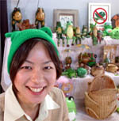
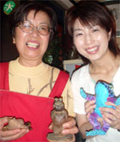
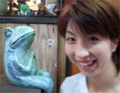
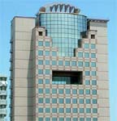
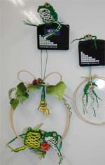
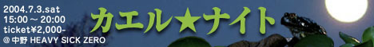
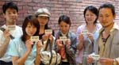

福岡かえる展６開幕！ 【福岡発地元新聞社記者様】福岡かえる展６が開幕しました。開幕日に取材にいったのですが、ついカエラーになってしまいました。ほんとは、ブタが大好きなので、いつか、カエル展にならって、かえる展のとなりで、豚展をひらきたいです。写真はカエル帽をかぶり、うれしさ全開の記者です。豚肉反対です。
【福岡かえる展６実行委員会】というわけで、今年も開幕したぞーっ！みんな忘れないように、六日までやっているので、福岡に集まってくれえええ。
にぎわうカエルな小料理屋！040601.jpg 【福岡発はただ様】福岡市南区大橋に、かえるがたくさん置いてある小料理屋さんがあります。店内に、どうしてそんなに多いのか謎です。
 【全国かえる奉賛会】さっそく小料理屋にいってみました。カウンター席が中心のこじんまりとした店で、この店の女性店長がかえるの持ち主。入り口にいきなり座っていたカエルのそばには、ガラスケースの中にほかにも多数のカエルが置いてありました。なんでも、遠くにいったお客さんも、この店にカエルように！との願いを込めてカエルを店に置いていたところ、お客さんや知人が、あちこちから手製のカエルを持ち込んでくれたり、カエルの絵などを描いてくれたものを並べているということです。
みんなも、仕事や家庭に疲れたら、このカエルでなごむ小料理屋「台所」にでかけてみよおおおおう。
福岡の百道にカエルビル！ 【福岡発げこげこ大王七世直筆】六月にむけて、梅雨の準備はいいかあああ。ってえことで、大王はあるひ窓の外を眺めていて大発見をしてしまったぞ。窓の外に広がる風景を眺めていたところ、あーなんかカエルを感じるなああああって思っていたら、なんと向かいのビルがカエルだったのであるう。 これって絶対に設計者が、それとわからないようにカエルの顔を描いたと思うんだよね。発注主にわからないように、ここは展望ルームにしましょうね。デザイン的にこのへんはミラーにしたらいいですよ。 両方のかどのところは窪んだ窓にしましょうね！そういって巧妙に意図を隠しながら、ついにカエルビルを現実のものとしてしまったのである。
まったく素晴らしい。
尼崎競艇はキャラクターにカエル！【大阪発ひなひな同志記者】こんにちは！ひなひなです少し前に関西方面に行ったときに発見したのですが、尼崎競艇はキャラクターにカエルを使ってました☆せんぷる君というらしい。ゲームもあったよ。せんぷるくんとじゃんけんしよう。
かえるの水引きを出展！ 【長崎発大浦お慶同志記者】ちょっと変わったかえる風鈴（壁掛けでもいいのですが）を水引で作ってみました。 ６月１日と６月６日は、カエル展に出撃します。授業はなしにして、かえるに変態しようと思ってますが、最近体温調整がつかなくて、調子を崩しておりますと友人から、「とうとうかえるになりよる」と言われてしまいました。 水引かえる君たちが、受けたら体調はケロッとよくなると思うけど。水引かえる君たちは、シュレーゲルやヤエヤマだけでなく、アカガエル科も誕生しております。（キモイという声もありますが）かえる君の表現素材として、こんなに水引がぴったりくるとは、私も、少々おどろきであります。
【全国かえる奉賛会】カエルに変態したら、今年の夏はとっても快適だぞお。鳥とかに気をつけて、水田で目玉だけ出して涼もう。きっとさわやかだぞお。というわけで、大浦さんの水引きをみたいひとは、今年のカエル展にでかけようではないかあ。
 東京ではカエル☆ナイト！【東京発カエル☆ナイト委員Hige同志記者】福岡のかえる展、松本のかえるまつりをめざせ！ 関東にもかえるまつりを！ とほろ酔いのメンバーがノリ一発で去年5月に開催したカエル☆ナイトvol.1！そして今年は会場をちょっと広くして、カエル☆ナイトvol.2を開催します！ 7月3日土曜日の午後3時から午後8時までです!! 開場時間は早めの設定で終電も安心システム！ コンセプトは去年と変わらず、『カエル好きのカエル好きによるカエル好きのためのイベント！ カエル映像、カエル写真、カエルイラスト、カエルグッズに囲まれて、最高の音楽とお酒で盛り上がろ〜！』となっています。もちろんお酒が苦手な方にはソフトドリンクもあり！ みなさん気軽に遊びに来てください。 まだまだ決めなくてはいけない事がたくさんあるのですが、作品を募集して展示することが決定しました！ みなさんもぜひイラストや写真でご参加ください!! 詳しくはカエル☆ナイトHP（http://bluebeat.mods.jp/kaeru_night/）をご覧下さい。よろしくお願いします！
福岡かえる展６開幕迫る！ 【全国かえる奉賛会】開幕まであとわずかになりました。会場の設営日も３０日の日曜日に決まり、いよいよ１日から六日までの六日間。全国のカエラーが集う、福岡かえる展のはじまりです。ところで、今回も、名刺大の特製チラシを会場がある福岡市大名周辺に、配付しましたあああああ。設営日の３０日に手伝える人がいたら、どんどん手伝ってくださいねえええええ。出展者も歓迎します。 サラダの上に生きたカエル！【豪州発michelle同志記者】いつも「テキストかえる新聞」楽しく拝見しています。いままで読むだけの“かくれカエラー”だったんですが、今回は驚くべきニュースをキャッチしましたのでお知らせいたします。そのニュースとは、ざっと次の内容です。 オーストラリアのメルボルン発ニュージーランドのウェリントン行きのカンタス・オーストラリア航空で２月、生きたカエルの入った機内食が乗客に出されていたそうだああああああ。 かえるを食料にするなんて、なんてえ航空機会社なのでしょう。 その後、この発見された可愛いカエルはウェリントン空港に到着後、検疫職員が冷凍庫に入れて、安楽死させたそうなのであるうう。 実は私、来週からオーストラリアに行くためカンタス航空を利用します。機内食にカエル様が入っていたら・・・と思うと今からドキ胸です。もちろん見つけても、乗務員にはナイショです！
【全国かえる奉賛会】なんで逃がしてやらなかったんだあ。可哀想ではないかあ。次回は、生きたかえるが機内食の中で餓死したりしないよう、生きた蠅をいっしょに餌として機内食に同封するように、この航空会社に要望するものなりいいい。
カエルをテーマに銀座で個展！【東京発広和製作所同志記者】 初めまして。銅版画の製作している広瀬ともうします。
２００４年５月３１日〜６月１日まで銀座のガレリアグラフィカビスにて個展をおこないます。主に蛙をモチーフにしています。蓑虫蛙、王様蛙，，，など。広瀬ひかり銅版画展で検索していただきますと、（かえるのねぐら）とゆうページで紹介していただいています。是非お立ち寄りください。
|
メールマガジン登録
メールマガジン解除
Powered by


かえる古新聞過去に取り上げた記事を見出し付きで一覧したい人は、ここをクリック◆創刊号を見る◆先週号を見る◆話題の号を見る◆かえる新聞の昔を読む
|
私も入っています。。全国かえる奉賛会
大王様に会うには、このバナーをクリック。ずっと奥に写真館があるぞ。全国かえる奉賛会に入会するには、自分のホームページのどこかに、下の部分を追加するとバナーがリンク付きで表示されるぞ。どんどん入会しましょー |


|